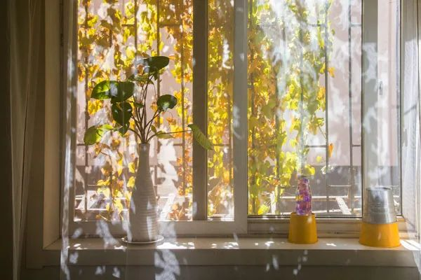
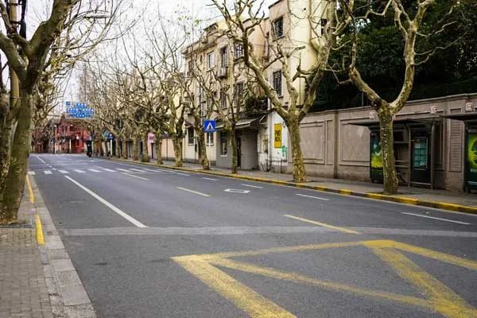

胡展奋：中国最早口罩小考
原文链接 备份链接 中国是文明古国，无论“唾”还是“咳”，先人都早早地有了规范，明令禁止乱唾。 冲突的发生非常偶然。 那天麦德龙超市结账通道人人都戴着口罩，突然人堆里一位老爷叔拉下口罩就是一顿暴咳，那暴咳绵长而剧烈，末了还风箱似地抽足气， …
我的马路我的街，希望那些赶时髦的小青年打扮得奇奇怪怪地快回来。

我住的地方在衡复历史文化风貌区内，那条路原本非常安静，可是成了风貌区后，每天有人来游览，带着单反长镜头走来走去，尤其是周末，附近的马路有好几个网红店，时髦年轻人排队买冰激凌，买蛋挞，握一杯咖啡，坐在沿街的路上作思考状。每到岁末，我最盼望春节到来的一条理由是，人都走了，马路空了，历史保护建筑都现出本来的面貌，我可以站到马路中央，两边法国梧桐树冠在头顶上空交叉握手，笔直的一条街，真好看，我要拍一张风景大片。
可是今年春节，我从沿街的窗户望出去，马路上早已如我所愿，空旷安静，整洁如洗，值班的环卫工人把每一片落叶都捡走了，可是我已经三天没有下楼，我得去买菜补仓，新冠肺炎疫情严峻，快递小哥一时半会回不来，网上订购的东西迟迟不能送。
我下楼丢垃圾，走去附近的超市。超市门口桌上有测温枪，正在结账的店员让我等一等他，超市里人不多，大家戴着口罩，默默地挑选，尽量不擦肩而过，在街上走也是，对面有人过来，这边赶紧让道，君子礼貌得不同以往。超市里蔬菜水果应有尽有。买了很多食物，结账的时候没有人用现金，个个举起手机扫码支付，我也跟着办了张会员卡。
往回走，因为提着重物，感觉迈不开腿，才想起多穿了一条秋裤。额头冒汗了，戴了眼镜又戴着口罩，气要透不出了。路上一个行人也没有，突然委屈得眼泪“哗”地冒了出来。想起在武汉的那些每天穿戴得如太空人一般的第一线医护人员，见过一个女护士自拍让妈妈放心的视频，一层层护士服，防护服，裤子、手套、脚套、口罩、护目镜、面罩，这么穿完，他们怎么走路，怎么呼吸？是进ICU病房救人哪，还要打针，抽血，插管，上呼吸器，以及生活护理，难以想象。

天气有点阴沉，倒春寒。等红绿灯时，一辆车也没有，我可以站到马路中央拍全景照了，可是一点拍照的心思也没有。空荡荡的马路，商店全部闭户，每一条弄堂口都贴着白纸告示，一位老太太挽着瘪瘪的马甲袋踽踽独行，风吹起了她凌乱的白发，我认出她戴的口罩，是居委会排队登记后再到药房买来的。怎么会这样，眼泪又上来了。
今年的春节确实过得不同以往，长假太长了，长到爱宅家的人无聊地用手机偷拍对面人家吊在窗台上的咸肉。长到想念以往街上背着单反相机长镜头的游人。我的马路我的街，不要再那么冷清那么了无生气了，希望那些赶时髦的小青年打扮得奇奇怪怪地快回来，来摆酷、拍照、拍视频；那些小女生来，买了椰子壳装的五彩冰激凌先拍照，人戳在马路上修图，上传朋友圈；爱好热闹的朋友也来，站啤酒小店门口碰杯，喧闹，坐人家门口台阶上直播……
好在前方新冠肺炎阻击战已获得阶段性成绩，全国包括湖北、武汉疫情已缓。今天网上读到陶斯亮《为你骄傲，我的大武汉》一文，就像我24岁那年第一次读到她《一封终于发出的信》时那样，这篇文章讲常识亮观点，一如既往的有力量，令人信服又感动。陶斯亮在文章最后提到世界卫生组织专家在北京新闻发布会上说，当这场疫情过去，希望有机会代表世界再一次感谢武汉人民。她说：“艾尔沃德的话让无数人动容。其实武汉人民最希望的，是他们所受的苦难，再也不要在中国上演。”是的，我们再也不要流泪，不再伤心，脱下口罩正常交往，享受热腾腾的每一天。

关于我们：
本公众号乃上海发行量最大的报纸《新民晚报》副刊《夜光杯》的官方微信，《夜光杯》是中国历史最悠久的报纸副刊，在微信平台，我们将以全新的面貌继续陪伴您。欢迎免费订阅，我们将每日精选两篇新鲜出炉的佳作推送到您的手机。所有文章皆为《夜光杯》作者原创，未经允许不得转载。
点击下面的篇目链接，可重读夜光杯微信公众号2月高点击率美文：
原文链接 备份链接 中国是文明古国，无论“唾”还是“咳”，先人都早早地有了规范，明令禁止乱唾。 冲突的发生非常偶然。 那天麦德龙超市结账通道人人都戴着口罩，突然人堆里一位老爷叔拉下口罩就是一顿暴咳，那暴咳绵长而剧烈，末了还风箱似地抽足气， …
原文链接 备份链接 想起他穿着厚的棉衣急赶赶骑车送菜的样子，不像理工男了，就是一个送菜的小哥。 “凌晨1点多起床，去汉口北取菜，因为有些地方禁行，平时只需要半个小时的路途，现在要一个多小时，一天至少要跑两趟。等到回来大概早晨7点多，然后我 …
原文链接 备份链接 没有想到终于定下决心动笔写下的第一篇（公众号）文章，是记录这样的一段经历。 2020年1月17日，临时决定回武汉，原计划初五（1月29日）回港。 可新冠肺炎发展地太快了。 1月23日，武汉封城。 3月4日，我搭乘首班 …
原文链接 备份链接 难以横刀立马，去前方救人性命，但可以自救，去思考该做的，能做的。 这次特殊的疫情，打乱了无数中国人心心念念的佳节，一段本该自在的长假变了色。从1月20日这天起，我和先生忙着取消亲友们的聚餐，退掉预定好的车票和宾馆。女儿 …
原文链接 备份链接 若干年后回望，这一定是一段值得铭记的日子。因为新冠肺炎疫情，许多家庭无法团圆。疫情数据地图的每次刷新都令人揪心。我们和千万武汉人在一起，这不只是一句安慰，因为没有人能够置身事外。 之前，我们向用户征集这段时间的故事， …